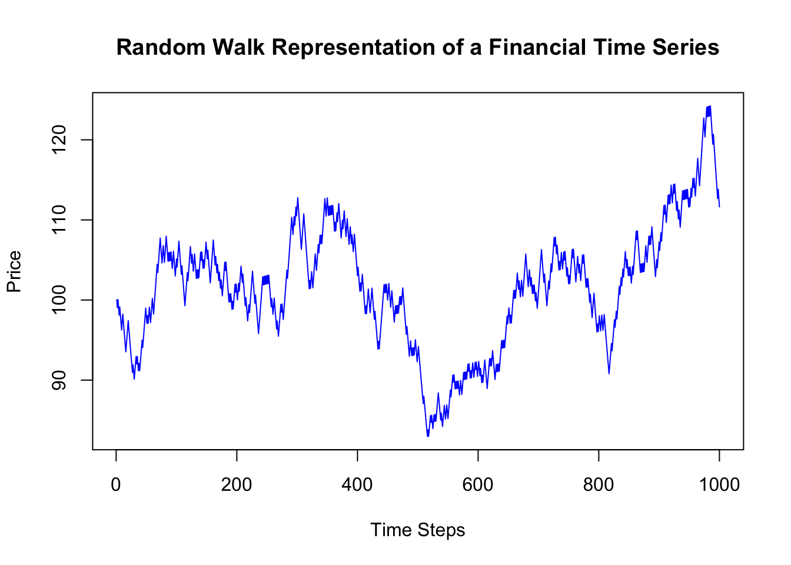

Financial time series, such as asset prices, exchange rates, and interest rates, are fundamental in econometric analysis. Unlike prices, returns are more commonly used due to their desirable statistical properties, such as stationarity and scale independence. This chapter will explore various aspects of financial returns.
4.1 We transform prices to returns
In financial econometrics, the focus on analyzing returns rather than prices is both theoretically and practically driven. Here’s a detailed explanation based on the book Lo and MacKinlay (1997)
4.1.1 Theoretical Reasons
Stationarity: Financial time series of prices are typically non-stationary, meaning their statistical properties (like mean and variance) change over time. This non-stationarity violates the basic assumptions of many econometric models. Returns, calculated as the percentage change in prices, are more likely to be stationary. Stationary data is crucial for applying many statistical and econometric techniques, as it ensures that the model’s parameters are constant over time.
Difficulties with Non-Stationary Data: Working with non-stationary data can lead to spurious regression problems, where relationships between variables appear significant even when they are not. Returns typically exhibit weaker forms of non-stationarity compared to prices, reducing the risk of such misleading results.
Economic Theory Alignment: Returns represent the reward for bearing risk, which is a fundamental concept in financial economics. Analyzing returns aligns more closely with economic theories that focus on risk and reward, such as the Capital Asset Pricing Model (CAPM) and Efficient Market Hypothesis (EMH).
Volatility Modeling: Returns facilitate the modeling of volatility, a key aspect in financial markets. Models like GARCH (Generalized Autoregressive Conditional Heteroskedasticity) are designed to capture the volatility clustering often observed in returns, which is not as apparent when analyzing prices directly.
4.1.2 Transaction Costs
Round Trip Transaction Costs: This concept usually refers to the total costs incurred in completing a full investment cycle – buying and then subsequently selling a financial asset. These costs include brokerage fees, bid-ask spreads, taxes, and other transaction expenses.
Impact on Returns Analysis: When considering round trip transaction costs in the context of financial markets, it’s important to analyze returns rather than prices. This is because the actual return on an investment needs to account for these costs. For instance, even if an asset’s price appreciates, the net return might be lower (or even negative) after accounting for transaction costs.
Modeling and Risk Assessment: In econometric models, incorporating transaction costs is crucial for realistic risk and return assessments. These costs can significantly impact the viability and attractiveness of trading strategies, especially those involving frequent transactions.
Behavioral Implications: Transaction costs also influence investor behavior. High costs might deter frequent trading, thereby affecting the liquidity and price volatility of assets.
4.1.3 Practical Reasons
Comparability: Returns standardize the performance across different assets, allowing for meaningful comparisons. For instance, a $5 increase in a $10 stock is a 50% return, whereas the same $5 increase in a $100 stock is only a 5% return. Analyzing prices would not capture this difference in performance.
Simplicity in Modeling: Modeling returns simplifies the mathematical complexity involved in dealing with non-stationary price series. This simplification allows for more straightforward interpretation and application of models.
Risk Management: In financial risk management, the focus is often on the variability of returns (i.e., risk) rather than absolute price levels. Analyzing returns directly aligns with this focus, aiding in the development of risk management strategies.
Efficient Market Considerations: In efficient markets, it is believed that all available information is already reflected in current prices. Therefore, the focus is on changes in prices (returns), which reflect new information, rather than on the price levels themselves.
TL;DR
Analysing returns rather than prices in financial time series is rooted in both theoretical foundations and practical considerations. The stationarity of returns, their alignment with economic theories, and their suitability for risk and volatility modeling are key theoretical reasons. Practically, returns offer comparability across assets, simplify modeling, align with risk management practices, and are more relevant in the context of efficient markets.
4.2 Introduction to Random Walks in Financial Time Series
4.2.0.1 The Concept of a Random Walk
A random walk is a statistical model used to represent the seemingly random movements observed in financial markets. In its simplest form, a random walk suggests that the future path of the price of a financial asset (like a stock or a bond) is unpredictable based on its past movements. The theory posits that price changes are independent of each other and follow a predictable statistical pattern.
4.2.0.2 Key Characteristics of Random Walks
Independent and Identically Distributed Steps: In a random walk model, each step or price change is independent of the previous one, meaning past movements do not influence future movements.
Stochastic Process: The random walk is a type of stochastic process, where the next value in the series is determined by both a random component (such as market sentiment) and a deterministic component (like a drift term representing average return).
Drift and Volatility: The model often includes a ‘drift’ term, which represents the average expected return, and a ‘volatility’ term, which captures the standard deviation of returns, reflecting the risk or uncertainty.
4.2.0.3 Random Walks in Financial Markets
In finance, the random walk hypothesis is closely linked to the efficient market hypothesis, which suggests that asset prices fully reflect all available information. According to this theory, it’s impossible to consistently outperform the market through any analysis (technical or fundamental), as price changes are essentially random.
4.2.0.4 Implications
Price Forecasting: Under the random walk model, forecasting future prices based on historical price data is deemed futile.
Investment Strategies: This theory supports passive investment strategies over active trading, as it implies that exploiting market inefficiencies for consistent gains is not feasible in the long term.
Risk Management: Understanding the random nature of price movements is crucial for risk management in portfolio construction and financial planning.
# Random Walk Simulation in Rset.seed(0) # For reproducibilityn_steps <-1000# Number of steps in the random walkinitial_price <-100# Starting pricedrift <-0.0002# Drift term, representing the expected returnvolatility <-0.01# Volatility term, representing the standard deviation of returns# Generate random steps, either -1 or 1steps <-sample(c(-1, 1), size = n_steps, replace =TRUE)steps[1] <-0# The first step is 0 so that the series starts at the initial price# Convert steps to returnsreturns <- drift + volatility * steps# Calculate the price seriesprices <- initial_price *exp(cumsum(returns))# Plotting the random walkplot(prices, type ='l', main ='Random Walk Representation of a Financial Time Series',xlab ='Time Steps', ylab ='Price', col ='blue')

4.2.1 R Simulation Context
The R script provided simulates a basic random walk, representing a financial time series. This simulation includes: - Random Steps: Simulating daily price movements as equally likely to go up or down. - Drift: A small positive drift to mimic the long-term average return of a financial asset. - Volatility: Incorporating randomness in the magnitude of price changes to reflect market volatility.
Important
This simulation serves as a basic model for understanding financial time series dynamics, though real-world financial data may exhibit more complex behaviors such as trends, seasonality, or mean reversion.
4.3 Asset Returns
4.3.1 One-Period Simple Returns
Simple returns represent the percentage change in asset price over a single period and are calculated as follows:
\[ R_t = \frac{P_t - P_{t-1}}{P_{t-1}} \]
where ( R_t ) is the return at time ( t ), ( P_t ) is the price at time ( t ), and ( P_{t-1} ) is the price at time ( t-1 ).
4.3.1.1 R Example:
# Assuming 'prices' is a vector of asset pricesreturns <-diff(prices) /lag(prices, 1)
Warning in diff(prices)/lag(prices, 1): longer object length is not a multiple
of shorter object length
returns <-na.omit(returns)
4.3.2 Multiperiod Simple Returns
For multiple periods, simple returns are compounded. The formula for a return over ( n ) periods is:
# To calculate multiperiod returnsmultiperiod_return <-prod(1+ returns) -1
4.3.3 Time Interval Considerations
The time interval of returns (daily, monthly, yearly) significantly impacts their magnitude and volatility. Annualizing returns involves scaling them to a yearly basis, usually by multiplying (for simple returns) or exponentiation (for log returns) by the number of periods per year.
4.3.3.1 R Example:
daily_return <- returns# Annualizing daily returns (assuming 252 trading days in a year)annualized_return <- (1+ daily_return) ^252-1
4.4 Continuously Compounded Returns
Continuously compounded, or log returns, are computed as the natural logarithm of the price ratio:
\[ r_t = \ln\left(\frac{P_t}{P_{t-1}}\right) \]
Log returns are time-additive, making them suitable for multi-period returns calculation and econometric modeling.
Excess return is the return of an asset over and above a benchmark or risk-free rate, crucial in risk-adjusted performance analysis.
\[ R_{excess} = R_{asset} - R_{benchmark} \]
4.8 Bond Yields and Prices
This section would cover various bond types and their yield calculations, including Yield to Maturity (YTM) and Current Yield.
4.9 Implied Volatility
Discuss implied volatility in options pricing, particularly with the Black-Scholes model. Introduce the CBOE VIX as a real-world application.
4.9.0.1 R Example:
library(forecast)
Registered S3 method overwritten by 'quantmod':
method from
as.zoo.data.frame zoo
# Assuming 'log_returns' is a vector of log returnsmodel <-auto.arima(log_returns)forecast <-forecast(model)
4.10 Conclusion
This chapter provides an in-depth understanding of financial data and asset returns, essential for effective financial analysis and investment strategies.
4.11 References
Lo, Andrew W., and A. Craig MacKinlay. 1997. The Econometrics of Financial Markets. Princeton University Press.